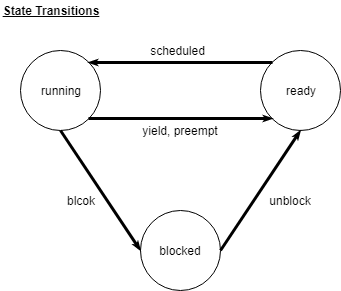
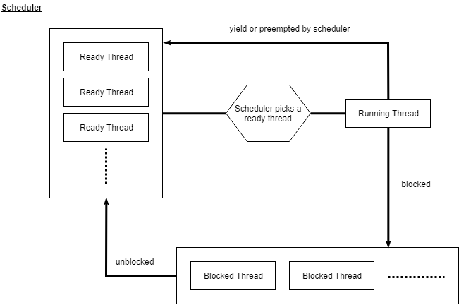
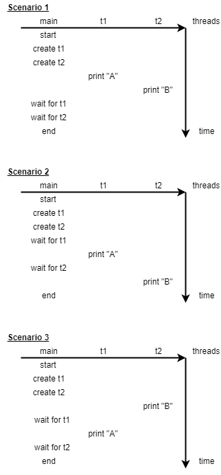

CS 230 - Introduction to Computers and Computer Systems |
|
| Instructor: | Rob Hackman |
|---|---|
| Office: | DC2551A |
| Email: | r2hackma@uwaterloo.ca |
| Website: | https://www.student.cs.uwaterloo.ca/~cs230/ |
| Note: | All program codes in this course notes are provided by Prof. Hackman during class. |
Lecture 19 - 15/03/2018
Concurrence
It means multiple things occurring at the same time.
Unless you've known, otherwise, all programs you've written have not used concurrently. They have been single-threaded.
We want parts of our program to run concurrently (at the same time) or at least appear to run concurrently.
Larger software, or specific types of software typically want concurrence.
For example, any software with a Graphical User iInterface (GUI) wants to employ concurrency. Why?
When user presses a button which begins execution of a computation that takes several seconds.
If no concurrency the computation runs taking all CPU time for those seconds meaning the code for the GUI can't run so the GUI appears frozen to user.
This scares and frustrates the user.
We want the work of background computation and displaying the GUI to be done concurrently.
Multiprogramming
It is a simplest form of implementing concurrency. It is analogous to how humans multi-task.
Multiple tasks do not actually occur at one time step, instead you switch back and forth between tasks.
The idea is CPUs are very fast.
Many computer tasks do not saturate the CPU (use 100% of the CPU's power).
Often computer tasks interact with slower entities.
- Devices such as disk, network, mouse, keyword.
- Humans, who need time to read, interpret and respond.
Goal is to use our single CPU to execute multiple tasks concurrently, or rather switch between these tasks to minimise wasted time, and simulate concurrency.
Task
It is the unit of computing our operating system controls, implemented as programs.
An instance of a task is called a process.
The operating system manages execution of all processes, REALLY it's like a middle manager.
- facilitates computation and running of processes
- enforces the rules on the processed
A process is comprised of:
- Threads (divisions of execution of a given process) one or more
- Data (our addressable memory space/ address space)
- I/O Associations
- example: open files, network connections
Threads within a process share the same address space (main memory) but do NOT share their stacks.
But the stack is stored in main memory, so how?
We just break up our stack space into segments for each thread and give each thread a distinct stack pointer.
This is usually okay because generally the stack does not get very large.
Really we are just simulating concurrency by switching between threads; we still only have one CPU doing work on one given thread at any given time.
We must be able to switch between which thread is executing - how to facilitate AND execute a Thread Switch.
To switch thread A to thread thread B...
-
suspend the execution of thread A
- store the CPU state (our registers) on the stack
- store thread A's stack pointer in a special per thread data structure maintained by the operating system, called the Thread Control Block (TCB)
-
resume execution of thread B
- retrieve thread B's stack pointer from the TCB
- restore your register you stored on the stack

Thread switches are different than subroutines:
- can happen at any time, current thread has no idea when it will be paused
- not known which thread will execute next
- all registers must be saved
- must change our stack (isolated)
If threads can swap in and out at any time, what is managing the execution of threads?
The Scheduler (which is part of the OS).
Scheduler
- part of OS
- keeps a list of ready threads and decides which to activate next
- when a thread paused execution, the scheduler is invoked
Analogy: Scheduler is the coach of a sports term. Thread states are:
- Running: currently executing thread (player on the field)
- Ready: thread is ready and waiting (analogous to being on the bench)
- Blocked: thread is NOT ready to be executed (player is out with injury)
- example: waiting for input
The actions or transition between these states are:
- Yield: running thread wants to pause its execution - asking the coach to sub you out
- Pre-empt: scheduler interrupts the currently executing thread - coach pulling you off the field
- Block/Unblock: block a thread (transition into blocked) or unblock (transition into ready) - getting injured/miraculously recovering
State Transitions
 
How to choose which ready thread to execute? We will talk about it later.
Using Threads in Code (pseudo-code)
Operations
tx = create (function name, function parameters)
tx: the thread namefunction name: the code that thread must execute (a function)function parameters: arguments for that function parameters
The operation spawns a new thread that will execute we named function with the given arguments. The thread is called tx.
join (tx)
The line waits for thread tx to compete.
Example: Run a program that print A and B, each printed in a separate thread.
01 printLetter(inputChar) {
02 output(inputChar); // prints intputChar to screen
03 }
04
05 main() {
06 t1 = create(printLetter,"A");
07 t2 = create(printLetter, "B");
08 join(t1);
09 join(t2);
10 }
11 // output: either "AB" or "BA"
12 // we don't know which one
Note:
Once a thread is created, it may start running right away, or maybe put in a ready state and run later, depending on scheduler.
Possible executions:
Other scenarios are possible.
In this example, threads were independent with respect to the data they used.
What if they aren't? We will talk about this next lecture.
Lecture 20 - 20/03/2018
Pseudocode Example 2:
01 global int count = 0
02
03 // function that adds 1 to counter 10 000 000 times
04 increaseCounter(inputChar){
05 output("Begin! " + inputChar)
06 for (int i = 0; i < 10 000 000; ++i) {
07 counter = counter++;
08 }
09 output("Done: " + inputChar)
10 }
11
12 int main() {
13 t1 = create(increaseCounter, 'A')
14 t2 = create(increaseCounter, 'B')
15 join(t1)
16 join(t2)
17 output("counter = " + counter)
18 }
We have no control over the scheduler.
To understand what's going on here, let's consider the assembly for counter = counter + 1.
01 ; counter is currently 50
02 lis $8 ; initialise $8 to the address of counter
03 .word counter ; never change $8
04 ...
05 lw $9, 0($8) ; load counter's value into register 9, so $9 = 50
06 addi $9, $9, 1 ; set $9 to 51
07 ; scheduler interrupts thread 1 here and starts thread 2
08 ; thread 2 starts executing
09 lw $9, 0($8) ; $9 = 50
10 addi $9, $9, 1 ; $9 = 51
11 sw $9, 0($8) ; counter = 51
12 ; thread 2 continues 49 more times so it gets preempted right after
13 sw $9, 0($8) ; counter = 100
14 ; now we go back to thread 1, which loads its program state
15 ; off its stack and starts where it left off
16 sw $9, 0($8) ; sets counter to 51
Summary
t1copied counter's current value of 50 into register 9 and incremented it, so$9 = 51t1was interrupted, storing 51 for$9on its stackt2was interrupted after incrementing counter 50 times, right after storing back to countert1begins execution again right where it paused, so it gets 51 as the value for register 9, and then executessw $9, 0($8),counter = $9
This is called a Race Condition, where a program's result depends on the timing of the execution of threads.
Section of code that can result in a race condition is called a critical section.
For example, counter = counter + 1.
We need mutual exclusion.
If one thread is in a critical section, another thread cannot enter that critical section.
In order to implement mutual exclusion, we could use more powerful atomic instructions.
It comes from the definition of atomic: "of or forming a single irreducible unit or component in a larger system."
That is, an atomic instruction is either entirely executed or not all.
- Once atomic instruction has began execution, it cannot be paused until it is done.
- One such instruction we could use is
addmen $s, i. - Atomic instruction that
adds ito the address of memory pointer to by$5.
Atomicity of an instruction is ensured by hardware.
All the instructions we have seen are atomic; they are just not powerful enough.
Special instructions like this may not be feasible or generalisable.
We can't make an atomic instruction for every possible task.
A programmer might want to be atomic.
How? Impact on hardware? Pipeline? CPI?
Instead of atomic instructions for everything, have special atomic instructions to control locks that we can use to ensure mutual exclusion of a critical component.
We can use a global lock variable pre critical section (or per critical/resource) which holds the state of the lock (locked or unlocked).
- available, UNLOCKED, free
- acquired, held, LOCKED
Thread must acquire the lock before entering the critical section and must release it upon completion.
Fix Example 2 Using Locks
01 global lock mutex
02 // in our increasCounter function...
03 lock(mutex)
04 counter = counter + 1
05 unlock(mutex)
When a thread calls lock(lockName), it tries to acquire the lock "lockName".
If no other thread has the lock (i.e. it is unlocked), the requesting thread acquires it and enters its critical section.
If the lock is not free, lock(lockName) will not return until the lock becomes free when the thread that holds it calls unlock(lockName) when exiting the critical section.
How can lock() and unlock() actually work?
There are many possible implementations; one possibility is assume we have an atomic instruction compare_and_swap(lock, expected, new) which works by checking if lock is currently in state expected; if it is it changes to state new, in both cases it returns the old state of lock.
Pseudo-code:
01 CAS(lock, expected, new){
02 actual = lock
03 if (actual == expected){
04 lock = new
05 }
06 return actual
07 }
08 // So now we can implement
09 lock(lockName){
10 while (CAS(lockName, UNLOCKED, LOCKED) == LOCKED) {
11 // do nothing
12 }
13 }
14
15 unlock(lockName) {
16 lockName = UNLOCKED
17 }
18
19 // Let's consider the lock is unlocked...
20 CAS(lockName, UNLOCKED, LOCKED){
21 actual = UNLOCKED
22 if (actual == UNLOCKED) {
23 lockName = LOCKED
24 }
25 return actual // UNLOCKED
26 }
27
28 // Similarly, if lock is LOCKED
29 CAS(lockName, UNLOCKED, LOCKED){
30 actual = LOCKED
31 if (actual == UNLOCKED) { // false
32 lockName = LOCKED
33 }
34 return actual // LOCKED
35 }
Since the return value of CAS is LOCKED, if we don't get the lock (because it is already locked), then the loop in lock(lockName) keeps looping.
If it is UNLOCKED, then we got the lock and our loop ends.
Locks of this style are called spin locks.
Since while waiting we need to constantly check if the lock variable is free, this is called busy waiting.
It is not very productive.
The entire time a waiting thread is running, it is just checking the lock (that can't get unlocked until another thread runs).
Alternative: Blocking LOCK
- uses scheduler to reduce busy wait time
- blocks a thread when locked out, unblocks when available
Locks are great; they have solved our need for mutual exclusion of our critical sections.
Locks themselves raise a new set of problems.
Consider two functions, 2 critical sections, 2 locks...
01 fn1{
02 lock(A)
03 lock(b)
04 ...
05 unblock(B)
06 unblock(A)
07 }
08
09 fn2{
10 lock(B)
11 lock(A)
12 ...
13 unblock(A)
14 unblock(B)
15 }
One possible interleaving of execution is:
fn1acquiresAfn2acquiresBfn1attempts to acquireBfn2attempts to acquireA
Neither thread can continue; if they can't continue, they can't unblock their block.
This is called a deadlock; when two threads are blocking each other from continuing, in doing so they ensure the other can never finish, but neither can they.
We can solve this deadlock by only ever acquiring the locks in the same order.
Solving deadlocks is not always so easy.
Hungry Hungry Philosopher (the dining philosopher's problem)
- 5 philosophers are sitting around a round table with plates of spaghetti in front of each of them
- in between each pair of philosophers is a fork so 5 forks total
- philosophers must alternate between thinking and eating
- to eat, a philosopher must have a fork in each hand and they can only grab the two forks beside them
The goal is design an algorithm so no philosopher starves.
Simple approach:
- think until left fork is available, then pick it up
- think until right fork is available, then pick it up
- when both forks are held, eat for a fixed amount of time
- put right fork down
- put left fork down
- repeat from beginning
Lecture 21 - 22/03/2018
Wrap-Up
So far we have talked about concurrency with no support from hardware.
We simply created multiple threads and swapped between them for execution (done by scheduler).
Without support from hardware, a multi-threaded program will always have worse throughput (runtime) than a single threaded version of that program.
- That is, the same program multi-threaded will take longer to execute than the single threaded version.
- Overhead of threads cost (swapping is costly, creating threads, waiting for threads, potential wasted time waiting for locks)
Threads are not useless in this case, they are used to allow for responsive software.
For example, thread for computation, thread for UI.
How can hardware support concurrency?
Hardware Multi-threading
- still only have one pipeline for execution
- only one thread can run at a time
- multiple (N) sets of registers
- support up to N threads
- switching is done in hardware, instead of saving/restoring
Temporal Multi-threading
- still not parallel execution
We can go even further to full multi core (standard for today's CPUs).
- multiple fully replicated pipelines, essentially multiple CPUs
- finally actual parallel execution (threads can be running at the same time as each other)
- potential gains are limited by the fraction of the program that can actually be run in parallel
- parallelisation of software is a big research topic today
How much can we actually speed up our code using multiple cores?
- p is the percentage of the program that can be made to be parallel
- 1-p is the percentage that cannot be parallelised
-
maximum speed up from using N cores can be calculated by...
- S(N) = 1 ÷ [(1-p) + (p ÷ N)]
What is the maximum possible speed-up if p = 90%?
Maximum possible speed-up: N = ∞
| S(N) | = | 1 ÷ [(1-p) + (p ÷ N)] | (all limit as N → ∞) |
| = | 1 ÷ [(1 - 0.9) + (0.9 ÷ ∞)] | ||
| = | 1 ÷ (0.1 + 0) | ||
| = | 10 |
Hence, the maximum speed-up is 10 times faster.
When trying to use parallelisation for speed, programmers try to write their code in such a way that maximises p.
More cores does not automatically make code run faster, some tasks cannot be parallelised at all.
Diminishing returns with increasing numbers of cores.
Scheduler controls which threads run on which cores.
Module 6 - The Operating System
What does an operating system do?
- provides an execution environment for programs
- manages resources (CPU, memory, I/O)
-
provides isolation for our programs and protection from...
- reading/using other programs' memory
- CPU hogging (one process hogging all CPU time so no one else gets to run)
The kernel is the core process (program) of the operating system.
It is the middle man between the applications and hardware.
One part of the kernel is the scheduler - it controls the execution of threads.
Performance Metrics
- throughput (or threads) - number of threads completed per unit of time
-
latency
- turnaround time: Tcompletion - Tarrival
- response time: Tfirst run - Tarrival
- fairness - equal CPU time for threads or proportional → making sure threads get to execute
- wait time - time spent in ready state
Scheduling is a very complex topic, so we will start with 4 (very unrealistic) assumptions and relax them as we go.
- each thread runs for the same amount of time
- all jobs arrive (are created) at the same time
- all jobs use only CPU (no I/O)
- run time is known for each thread
Most basic attempt at scheduling - first come first served (first in first out - FIFO).
It is very simple and easy to execute.
Example: We have 3 threads A, B and C. All of them take 10 seconds to run. Assumption 2 says they all arrive at same time.

What is the average turnaround time?
| Job | Tcompletion | Tarrival | Tturnaround |
|---|---|---|---|
| A | 10 | 0 | 10 |
| B | 20 | 0 | 20 |
| C | 30 | 0 | 30 |
Average Turnaround = (10 + 20 + 30) ÷ 3 = 20s
Let's relax assumption 1 (all threads take same time).
How does FIFO perform now?
Does poorly with the grocery store dilemma:
A, B and C again, but A takes 100s, B and C take 10s.

Average Turnaround = (100 + 110 + 120) ÷ 3 = 110s
This problem of many short resource consumers stuck behind one large resource consumer is called the convoy effect.
Shortest Job First (SJF): schedule shortest first

Average Turnaround = (10 + 20 + 120) ÷ 3 = 50s
SJF is much better than FIFO in this case.
If our assumptions held, SJF would probably be optimal.
If we relax assumption 2 (all threads arrive at the same time) and if A arrives first in previous example, we still get convoy effect.
Maybe then the currently executing thread should be pre-empted if a new thread has a shorter runtime than the remainder of the current thread is runtime.
This is called shortest time to completion first (STCF), aka pre-emptive shortest job first (PSJF).
Example: Previous scenario with A arrives at 0, B and C arrive at 10.

Average Turnaround = [(120 - 0) + (20 - 10) + (30 - 10)] ÷ 3 = 50s
It avoids convoy effect even without assumption 2.
STCF is probably optimal (for turnaround time); so long as we still have assumptions 3 and 4.
But turnaround time is not our only metric.
Users want low response time on their interactions with the program.
Response time from our previous example...
| Job | Tfirst response | Tarrival | Tresponse |
|---|---|---|---|
| A | 0 | 0 | 0 |
| B | 10 | 10 | 0 |
| C | 20 | 10 | 10 |
Average Turnaround = (0 + 0 + 10) ÷ 3 ≈ 3.33s
STCF (and related) are not good for response time.
Imagine thread C was for user input and was responding to you typing something - waiting 10 seconds to see what you typed show upon the screen is not what we want or expect from our software.
Another big problem with STCF is a long runtime thread can be perpetually passed over in favour of shorter threads.
It is called thread starvation.
Another algorithm: Round-robin
Instead of running a job until completion (or until pre-emption by a shorter thread), run the job for a short set amount of time, then switch to the next job in queue.
- repeat until all threads are done
Hardware timers interrupts the CPU at the end of each time slice.
Example: Threads A, B and C, arrive at t = 0, each require 5 seconds.

Average Response Time = (0 + 5 + 10) ÷ 3 = 5s
With round-robin and time slice of 1 second:

Average Response Time = (0 + 1 + 2) ÷ 3 = 1s
Intuitively, response time is better with round-robin.
But context switch takes time - it is costly.
So it is a trade-off between responsiveness and paying for switches.
Also, how does round-robin perform on turnaround time?
In example above, turnaround = (13 + 14 + 15) ÷ 3 = 14s
Generally, response time is at odds with turnaround time.
| ← Go to Module 4 - Build and Execute | ↑ Go to Index | → Go to Module 6 - Operating System |
Find a typo or mistake? Feel free to contact me and I will correct it as soon as possible.
Thanks For Coming Here. - Calvin Li
 This work by Chun Kit (Calvin) Li is licensed under a Creative Commons Attribution-NonCommercial 4.0 International License. Chun Kit (Calvin) Li © 2017 - 2018
This work by Chun Kit (Calvin) Li is licensed under a Creative Commons Attribution-NonCommercial 4.0 International License. Chun Kit (Calvin) Li © 2017 - 2018